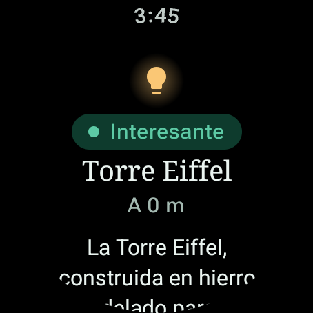

App standalone para Wear OS
ExplorIA
Pasa cerca de una plaza, una iglesia o un museo y tu reloj te cuenta un dato breve sobre él, generado con IA a partir de información real.
Funciona en cualquier ciudad del mundo. Tú eliges el tipo de dato (interesante, histórico, cómico, curioso o gastronómico) y con qué frecuencia aparece.
- Wear OS Android 11+
- Kotlin + Compose
- 130 tests unitarios
